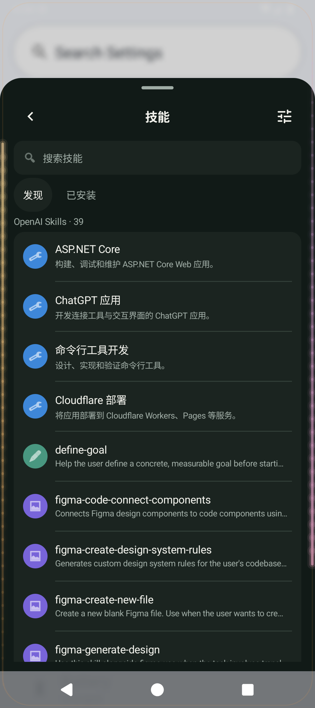
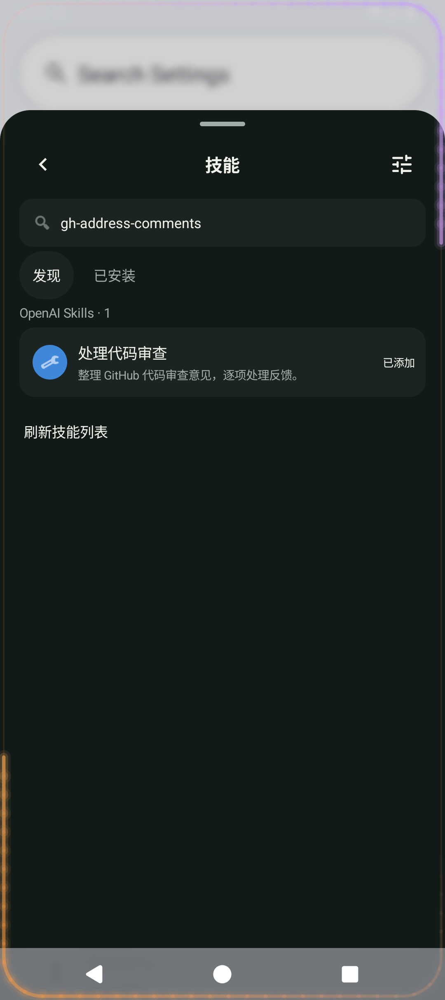
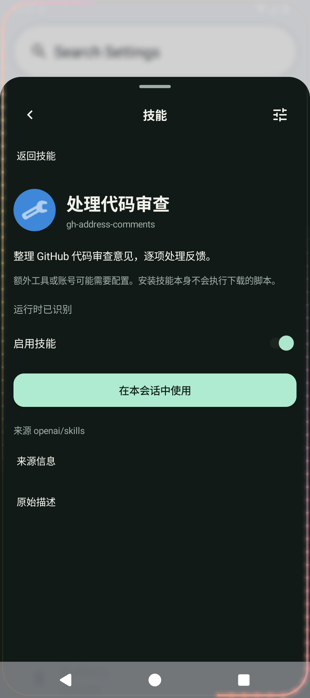
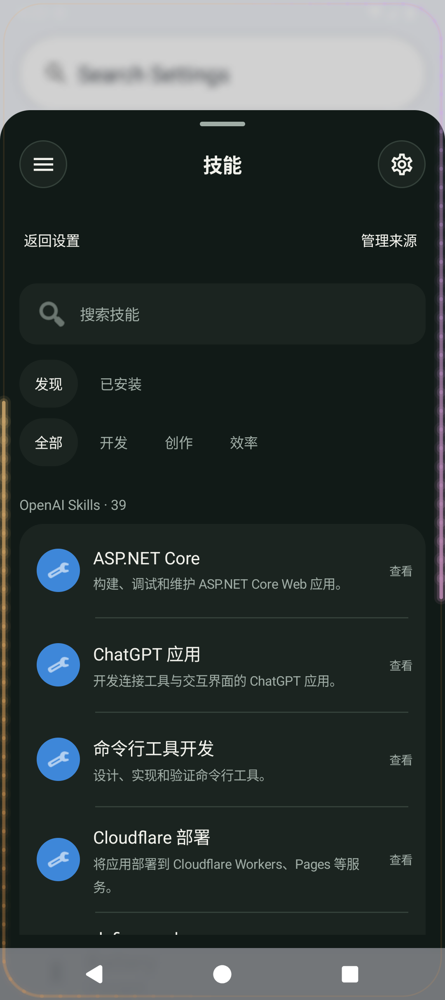
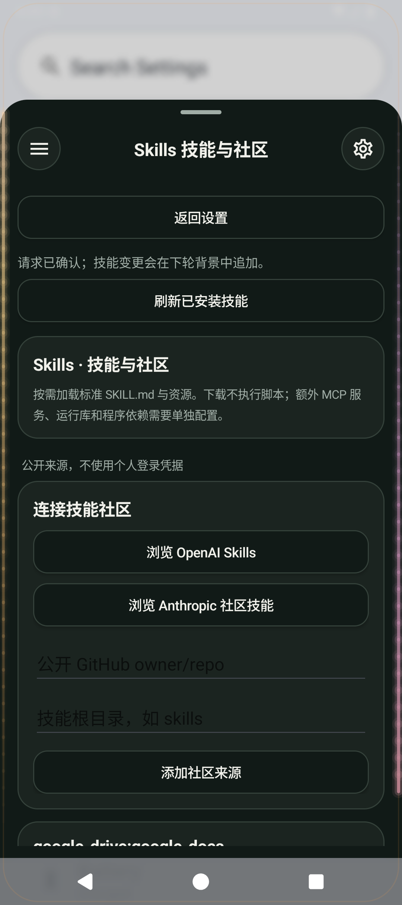

A browsable skills library
Search, grouped entries, and skill details form the main flow. The list presents skills first; installation, enable/disable, and conversation loading are in details.


Browse skills
Icons, names, one-line summaries, and actual status. Switch between discovery and installed skills, with keyword and category filters.


Find the capability you need
Search immediately narrows the list, without searching through dozens of installation buttons.


Inspect and manage
Details read actual instructions from a pinned commit; source, hash, and original description expand on demand.
References used in this round
The user-provided QbitAI STEPX Neo article images show grouped skill lists with icons, names, short descriptions, and search; the skills.sh catalog emphasizes search and provenance. Taku retains the system drawer and existing theme, with no unimplemented Agents, AI app marketplace, or invented popularity data.
Compact-layout changes: on the same emulator at the same scale, fully visible entries increased from about 4 to 8. Navigation and filters reuse the top bar; rows are 64dp and icons 32dp.Density acceptance record
View the earlier, looser layout

View the original button-based page

Actual acceptance
A dedicated emulator passed search/filtering, skill details, native recognition after installation, empty results, back navigation, and light/dark theme regression. Build and repository verification passed. Installed skills may still require additional tools or accounts; downloading alone does not execute scripts.